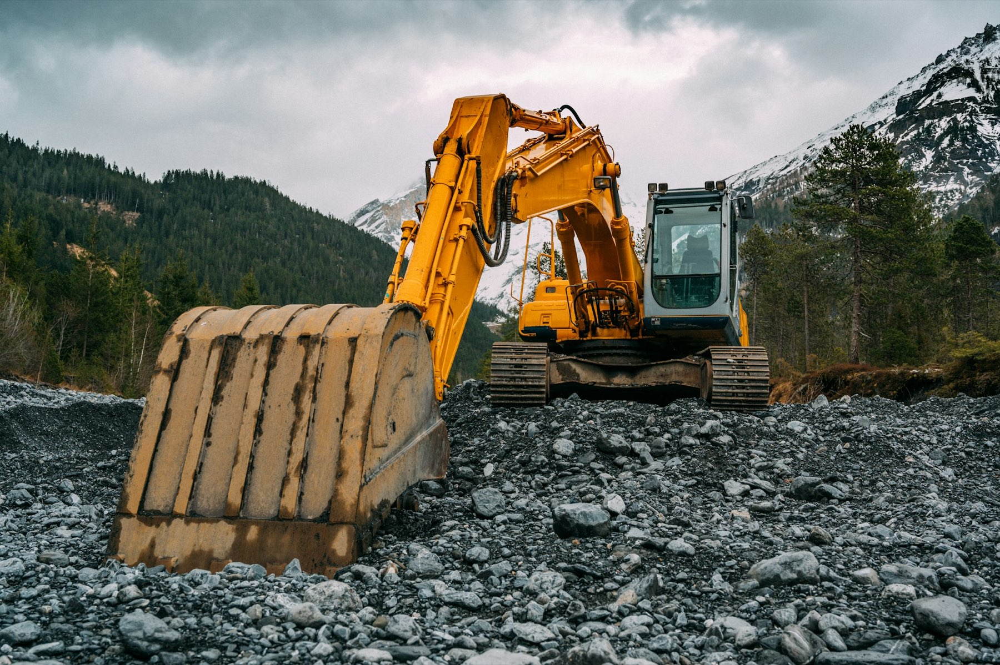
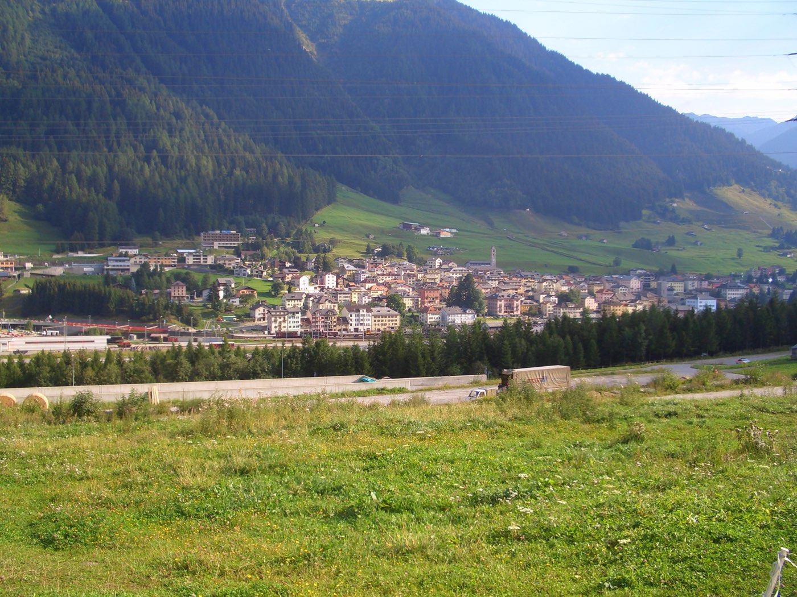
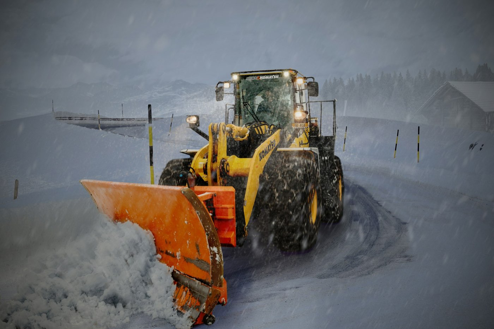
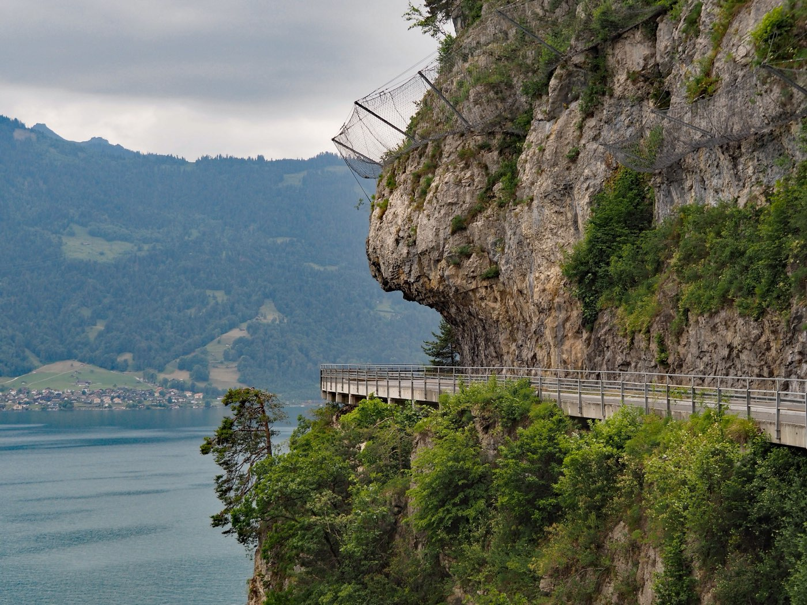
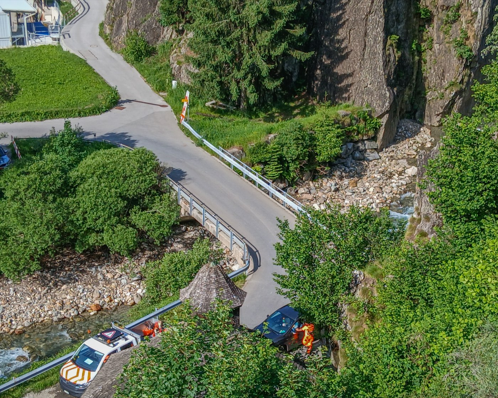
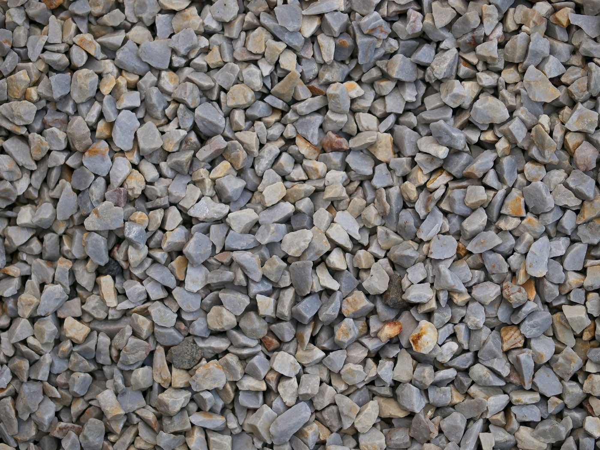
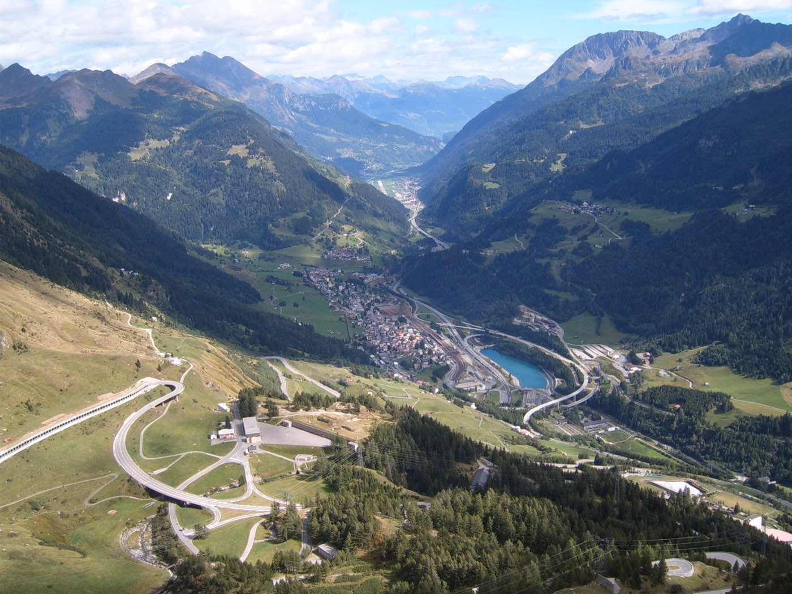

Airolo · Alta Leventina · dal 1946
Costruiamo ai piedi del Gottardo.
Edifici e genio civile, inerti e calcestruzzo, strade, ripari contro i pericoli naturali e servizio invernale. Un'impresa di famiglia, ad Airolo da ottant'anni.




Foto indicative
- 1946attivi dal
- AiroloStrada di Valle 10
- Inerti e calcestruzzoproduzione propria
- Arch. dipl. ETHil titolare
- 4,8su Google, 5 recensioni
Una valle, tutti i mestieri
Dalla parete al fiume, in sezione.
Lavori
Quello che serve a una valle di montagna.
Dal muro di casa alla parete sopra la strada. Ecco i lavori che l'impresa esegue.

Costruzioni edili e opere del genio civile, anche come impresa generale. Risanamento di edifici, manufatti e opere in calcestruzzo, manutenzione e risanamento di gallerie.
Estrazione, produzione e vendita di graniti, sabbia e ghiaia. Produzione e vendita di calcestruzzo.
Pavimentazioni stradali e in pietra naturale. Posa di condotte di ogni genere.
Messa in sicurezza di pareti rocciose. Esecuzione e manutenzione di ripari contro gli eventi naturali.
Opere forestali, giardinaggio e rinaturazione. Arginature dei corsi d'acqua.
Scavi meccanici e movimenti terra, trasporti in genere, servizio invernale. Gestione di discariche e riciclaggio di materiale.
Un ufficio tecnico di progettazione interno all'impresa, e l'allestimento di perizie.

Inerti e calcestruzzo
Il magazzino? Ai piedi del silos bianco e verde.
Così lo indicava l'impresa stessa. Dall'uscita dell'autostrada seguite le indicazioni per Nante: dopo 100 metri sulla cantonale, a sinistra.
Apri Airolo in Google Maps- UfficiStrada di Valle 10, 6780 Airolo
- Telefono091 873 81 00
- Fax magazzino091 869 21 87

Dal 1946
80 anni di lavoro in alta Leventina.
Attiva dal 1946, l'impresa porta il nome della famiglia Pervangher. Oggi il titolare è Fernando Pervangher, architetto diplomato al Politecnico federale di Zurigo. Con lui firmano per l'impresa Barbara, Gionata e Mirco Pervangher.
- Titolare
- Fernando Pervangher, arch. dipl. ETH SIA OTIA
- Procura
- Barbara, Gionata e Mirco Pervangher
- Sede
- Strada di Valle 10, Airolo
Contatto
Un lavoro in valle? Chiamate l'ufficio.
- UfficiStrada di Valle 10, 6780 Airolo
- Fax091 869 19 47 (uffici) · 091 869 21 87 (magazzino)
- WhatsAppanche su WhatsApp (linea fissa)
Strada di Valle 10
6780 Airolo, Ticino